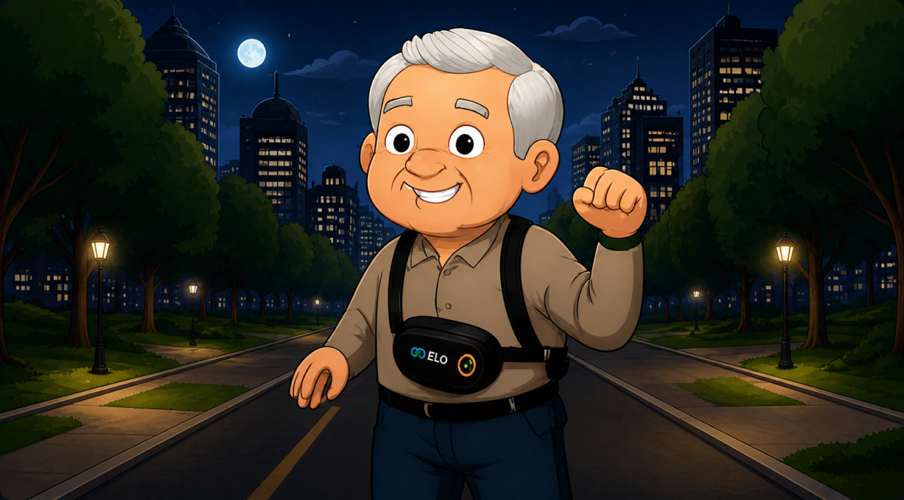

ELO: O Jogo
Uma jornada interativa sobre cuidado, conexão e tecnologia.
Você é o cuidador. A cidade é grande, a noite chegou e o Sr. João saiu para caminhar com a pochete. Tudo certo por aqui?

Jogar
Carregando o jogo
O jogo ainda está em desenvolvimento
Assim que a equipe publicar a versão jogável, ela abre aqui mesmo, dentro do site.
Conhecer a pochete enquanto issoHistória do jogo
Você é um cuidador tecnológico responsável por garantir a segurança e o bem-estar de idosos em uma cidade moderna. Equipado com a tecnologia ELO, você precisa monitorar, responder a emergências e tomar decisões rápidas para manter todos seguros.
Em cada fase, você enfrentará diferentes cenários: desde ajudar dona Maria a chamar um Uber para sua consulta médica até responder a alertas de emergência do Sr. João, que se perdeu no parque. O jogo simula situações reais do dia a dia.
À medida que você avança, desbloqueia novos recursos da pochete ELO e enfrenta desafios mais complexos. Será que você consegue manter o elo forte com todos sob seus cuidados?
Demonstração do jogo
Veja o jogo em ação: gameplay e mecânicas principais.
Vídeo em produção
A demonstração completa será inserida aqui.
1920×1080, entre 5 e 7 minutos